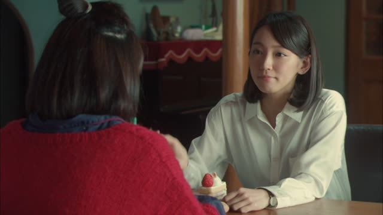
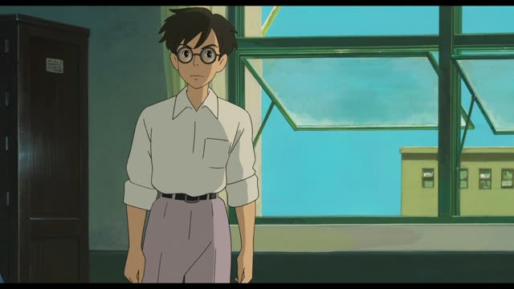
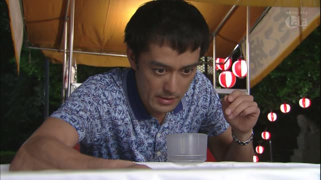
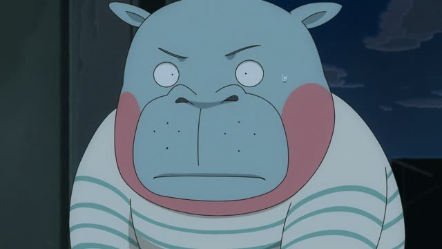
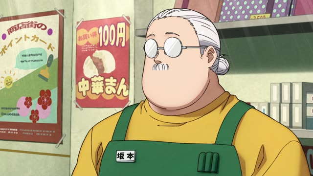
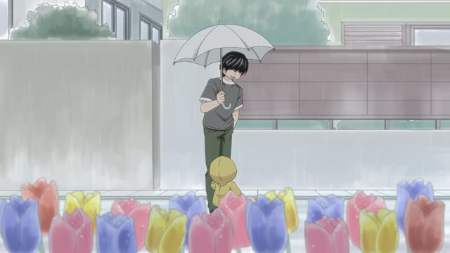

～こと (Doing as a thing)
Shirokuma Cafe · Episode 1
はい、ゴロゴロしながら笹を食べることです。
"Yes. Lazing around eating bamboo." [asked what he's good at]
Plain verb + こと turns an action into a noun, "doing X": 食べること (eating). Then it can be the subject, the object, or what something "is".
On this card, Panda is at a job interview and asked what he's good at. ～ことです: "it's doing X". です makes it polite.
の does a similar job (のは, のが). こと is used when the action is an idea or a rule: 大切なのは～ことだ.
Dungeon Meshi · Episode 2
俺が最も嫌いなのは、仕事を他人に邪魔されることだ。
"What I hate most is having my work interfered with."
On this card, Chilchuck sets the rules. ～ことだ: the thing he hates is this action.
Quick Examples
A job interview.
趣味は写真を撮ることです。
"My hobby is taking photos."
PoliteYour friend asks your dream.
夢は日本に住むこと。
"My dream is living in Japan."
CasualA teacher's advice.
大切なのは、毎日続けることです。
"What matters is keeping at it every day."
PoliteTalking about cooking.
料理することが好き。
"I like cooking."
のが好き also works.
CasualWith and without
趣味は写真です。
"My hobby is photography." A noun.
趣味は写真を撮ることです。
"My hobby is taking photos." An action turned noun.
Examples from Media

Quartet · Episode 3
誘惑は、まず人間を捨てることです。
"Seduction is, first of all, throwing away being human."
Kekkon Dekinai Otoko · Episode 5
それは医者が決めることです。
"That's for the doctor to decide."

The Wind Rises
説明してください。身に覚えのないことです。
"Please explain. It's something I know nothing about."

Kekkon Dekinai Otoko · Episode 7
ここで大切なのは、下手に動かさないことだ。
"The important thing here is not moving it carelessly."
Scooping goldfish.

Odd Taxi · Episode 9
とにかく、自分で自分を認めてやることだ。
"Anyway, it's about accepting yourself."

Sakamoto Days · Episode 5
いつ襲われてもいいように、強くなることだ。
"It's getting strong, so we're ready whenever they come."
Brush Up Life · Episode 7
歩み寄ることが大事だと思うな～。
"I think meeting halfway is what matters."

Kotaro Lives Alone · Episode 9
それは相手を思って傘を差すことだ。
"It's holding the umbrella with the other person in mind."